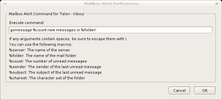
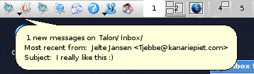
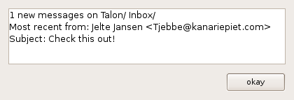

About
This extension for Mozilla Thunderbird allows you to specify, for each seperate mail folder, a system command that will be executed when new mail is found there. This way, you specify different actions for less important folders, or no action at all.Usage
After you have installed the extension, you get a new menu item 'Mailbox Alert' if you right-click on a folder in your folder pane. This option opens a small preferences screen that allows you to specify a system command that will be executed if Thunderbird notices that there is new mail there.  You can use a few macros that will be substituted by appropriate values:- %server The name of the server where the mail folder resides
- %folder The name of the mail folder
- %count The number of unread messages
- %sender The sender of the last unread message
- %subject The subject of the last unread message
-
%charset
The character set of the folder
Download
The current version is 0.4. To install it in Thunderbird, right-click the link, choose "Save as", go to Tools->extensions in Thunderbird, choose Install, and select the downloaded xpi file.Changelog
-
[0.3-0.4]
- Added some debug messages using the dump() function (enable them by setting browser.dom.window.dump.enabled to true in your settings)
- No longer alerts with 'locked' or exceptions, instead it ignores the locked setting (doesn't seem to matter anyway for reading out folder data) and uses dump() for exceptions.
-
[0.2-0.3]
- Changed the possible Thunderbird version to 1.0 - 1.9+ so that it also works in 1.5
- Fixed bad backslashes in front of < > and & characters in the messages
- [0.1-0.2] Made the function call non-blocking
- [0.0-0.1] Initial version
Old Versions
Usage Example
In KDE, i use KDialog to present the message for my main mailboxes. I still run it through a little script first (based on the one below) but that probably isn't even really needed. The result looks like this:  In gnome, I have my main mailboxes setup with the following command:/home/jeltejan/code/perl/mailalert.pl %count %server %folder %sender %subject %charsetThe script it calls reads the information and creates a nice borderless non-focused temporary gxmessage alert:
#!/usr/bin/perl -w
my $messager = 'gmessage';
my $default_args = '-wrap -borderless -nofocus -center -font "sans 10"';
$default_args .= " -timeout 5";
#$default_args .= " -buttons \"\"";
my $arg1 = shift();
my $arg2 = shift();
my $arg3 = shift();
my $arg4 = shift();
my $arg5 = shift();
my $arg6 = shift();
if ($arg6) {
$default_args .= " -encoding ".$arg6;
}
my $line1 = $arg1." new messages on ".$arg2."/".$arg3;
my $line2 = "Most recent from: ".$arg4;
my $line3 = "Subject: ".$arg5;
my $size = (length($line1) ) * 8;
my $size2 = (length($line2) ) * 8;
if ($size2 > $size) {
$size = $size2;
}
$size2 = (length($line3) ) * 8;
if ($size2 > $size) {
$size = $size2;
}
my $geom = "-geometry ${size}x1";
my $tempfile = `mktemp`;
system("echo '$line1' >> $tempfile");
system("echo '$line2' >> $tempfile");
system("echo '$line3' >> $tempfile");
my $cmd = $messager." ".$default_args." ".$geom." -file ".$tempfile;
#".$line1." ".$line2." ".$line3." ";
print STDERR "ARGS: ".$arg1." ".$arg2." ".$arg3." ".$arg4." ".$arg5."\n";
print STDERR "LOG: ".$cmd."\n";
system($cmd);
system("rm $tempfile");
So when mail arrives in these folders, i get this popup:
